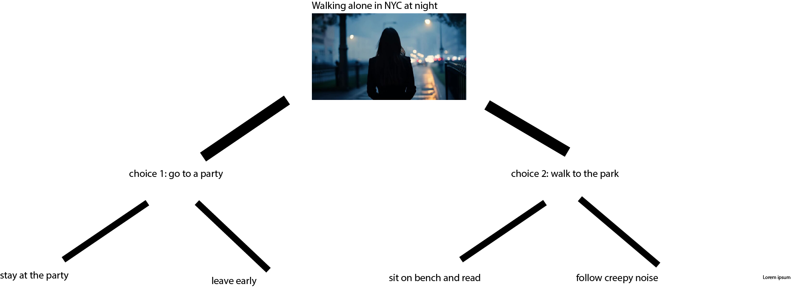

This interactive story follows a character walking alone through New York City at night, where the city feels full of possibility and uncertainty. The story focuses on how a single decision can completely change the tone and outcome of an experience. The setting shifts between crowded, social spaces and quiet, isolated environments.
The user is given two main choices: to go to a party or to walk into the park. Each choice leads to two different outcomes. At the party, the user can either stay and experience a chaotic, overwhelming atmosphere or leave early and return to a calm and reflective state. In the park, the user can choose to sit peacefully or follow a strange noise, leading to a more mysterious and slightly unsettling experience.
